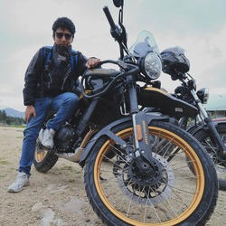

Camilo's Photo Book
Ingeniero de sistemas y fotógrafo amateur
Como entusiasta disfruto explorar paisajes, momentos y detalles a través de mi cámara, capturando la belleza que a menudo pasa desapercibida. Para mí, la fotografía es una forma de desconectarme y conectarme a la vez, apreciando el mundo desde otra perspectiva.
ようこそ